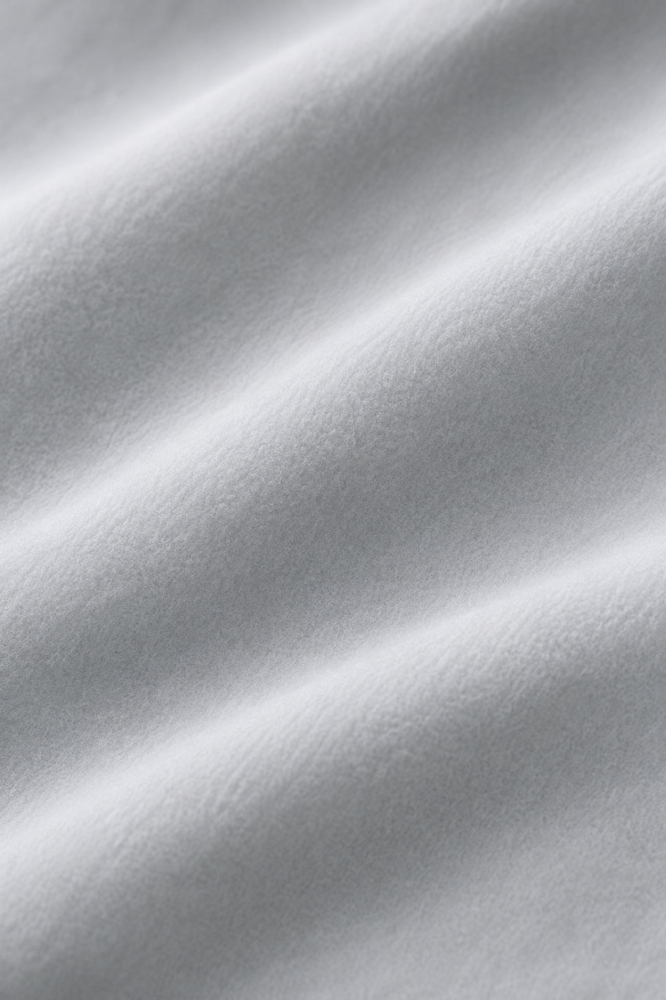

직접 편직하고 공급하는화성섬유의 주요 원단입니다.
원단 이미지는 시안용 참고 이미지입니다.

기모 표면의 편직 원단
양면 편직 조직의 원단
폴리에스터와 레이온을 사용하는 싱글 원단
DTY 원사를 활용한 싱글 원단
FDY 계열 원사의 편직 원단
원단명이나 샘플, 사용 용도 등알고 계신 내용부터 상담할 수 있습니다.
HWOASUNG FABRICS
소재 질감 참고 이미지